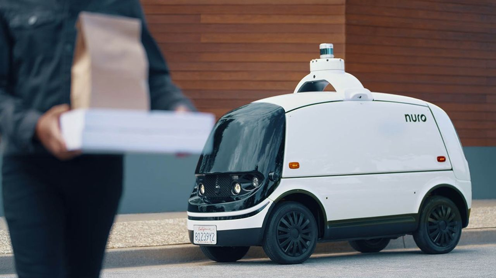
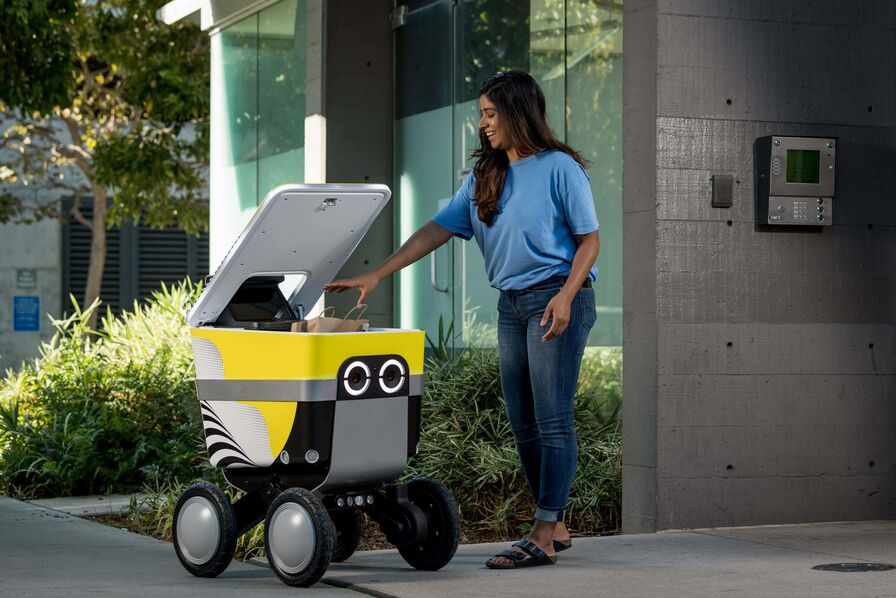
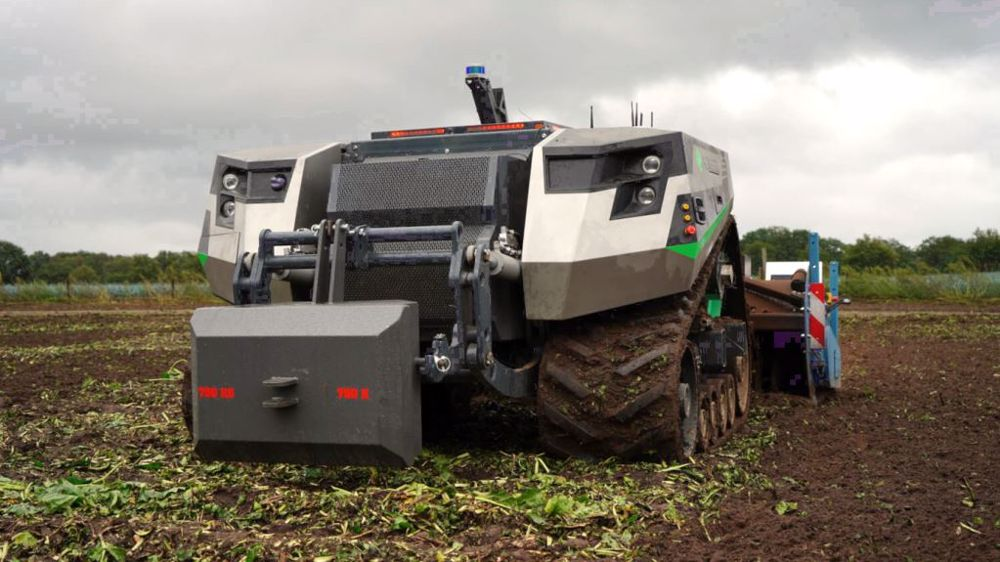
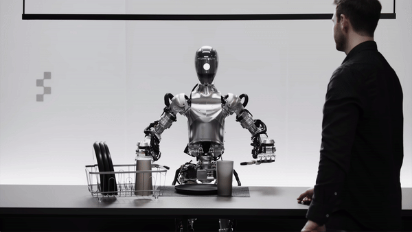

La veille est un processus régulier de recherche, d'analyse et de sélection pertinente d'informations pouvant apporter des avantages compétitifs à une organisation (entreprise, réseau). L'objectif de la veille peut être de déceler des opportunités, de répondre aux besoins et attentes (exemple : besoins en formation), de trouver des solutions, les tendances dans un domaine spécifique ou encore de réduire les risques liés à la non maîtrise de l'avenir. Dans un environnement mondialisé et en constante évolution technologique, où on assiste à une prolifération de sources, la veille s'impose comme une solution pour identifier et anticiper les décisions stratégiques, elle permet également de saisir des opportunités importantes en surveillant activement son environnement.
J'ai commencé cette veille technologique en octobre 2023 sur les robots autonomes, tels que ceux développés par Serve Robotics pour la livraison, présentent des opportunités innovantes mais suscitent également des préoccupations. La réussite de la première livraison commerciale sans opérateur en janvier 2022 témoigne de l'avancement de la technologie, offrant une efficacité accrue dans les services de livraison. L'autonomie des robots sans nécessité de flux vidéo vers un opérateur distant est un avantage, améliorant l'efficacité et réduisant les risques de défaillance. Les capteurs avancés, comme Lidar, ultrasons et caméras, renforcent la sécurité avec des fonctionnalités telles que le freinage automatique d'urgence. Cependant, la dépendance persistante à la surveillance humaine soulève des inquiétudes en matière de sécurité, nécessitant une approche prudente avant un déploiement à grande échelle. L'impact potentiel sur l'emploi et les préoccupations liées à l'acceptation publique nécessitent une gestion attentive. En résumé, bien que les robots autonomes offrent des améliorations substantielles, des questions de sécurité, d'emploi et d'acceptation publique doivent être résolues de manière proactive pour garantir une intégration réussie de cette technologie émergente dans notre quotidien. La veille technologique continue sera cruciale pour suivre les développements et les ajustements nécessaires.
   Dans cette veille technologique sur les robots autonomes, nous avons exploré les avancées fascinantes qui transforment notre monde. Des progrès remarquables ont été réalisés dans la navigation, la perception et la prise de décision des robots, ouvrant la voie à une multitude d'applications potentielles dans divers domaines tels que la logistique, la santé, et même l'exploration spatiale. Cependant, ces progrès soulèvent également des questions éthiques et sociales importantes, notamment en ce qui concerne l'impact sur l'emploi et la sécurité des données. Alors que nous embrassons ces technologies émergentes, il est crucial de les développer de manière responsable, en garantissant qu'elles bénéficient à l'ensemble de la société et respectent les normes éthiques les plus élevées. En conclusion, les robots autonomes promettent un avenir excitant et plein de possibilités, mais leur développement doit être guidé par des principes éthiques et une réflexion approfondie sur leur impact sur notre monde